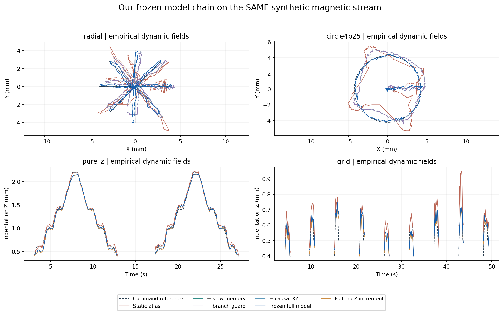
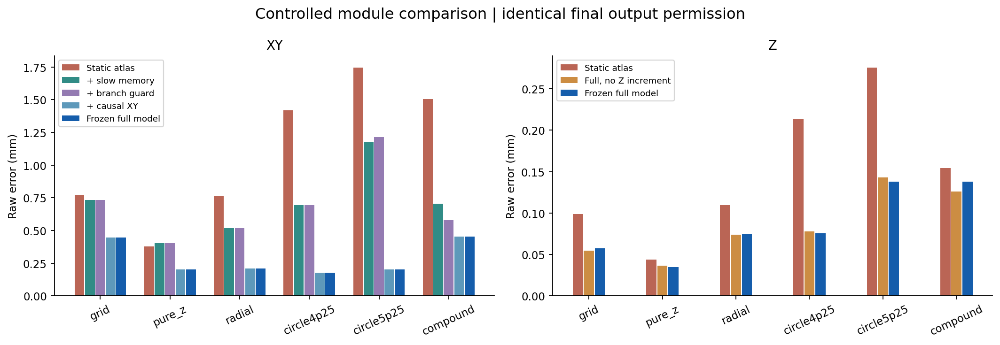
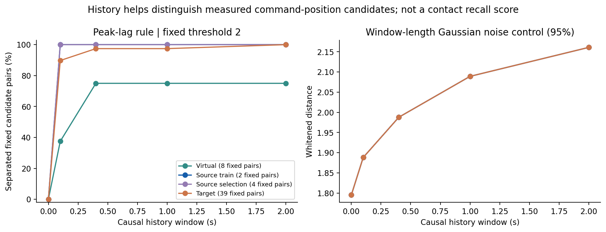
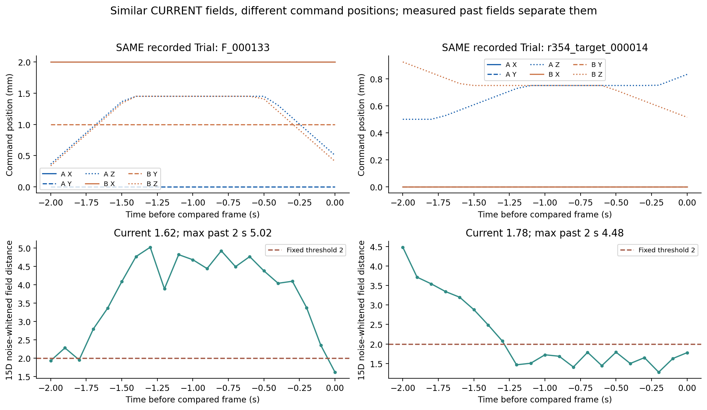
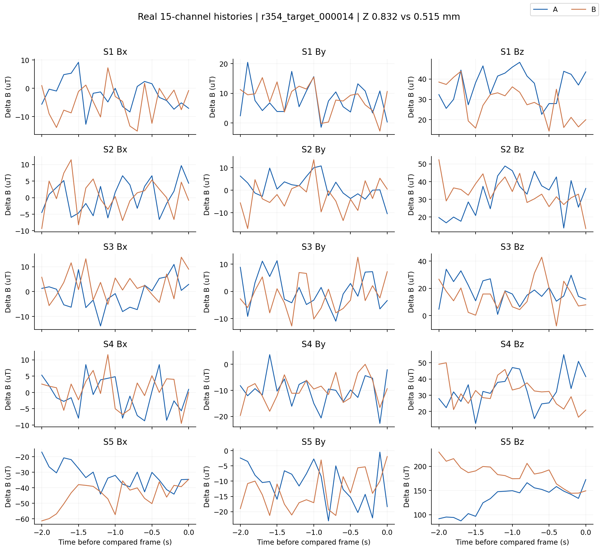
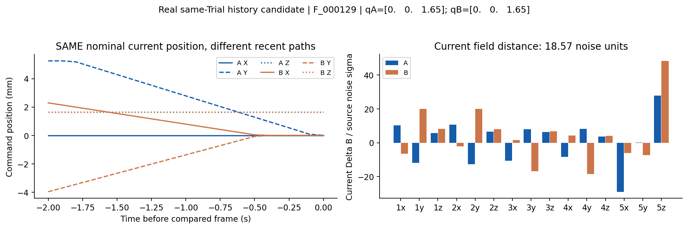
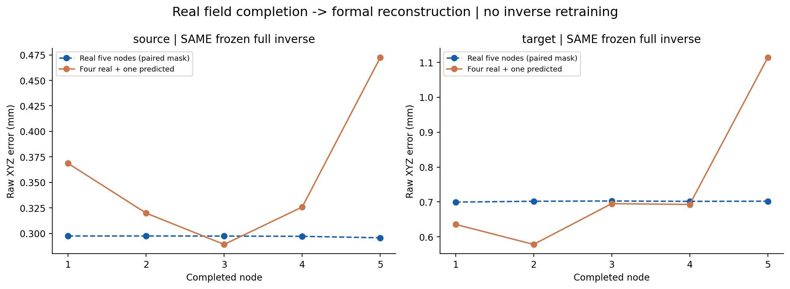
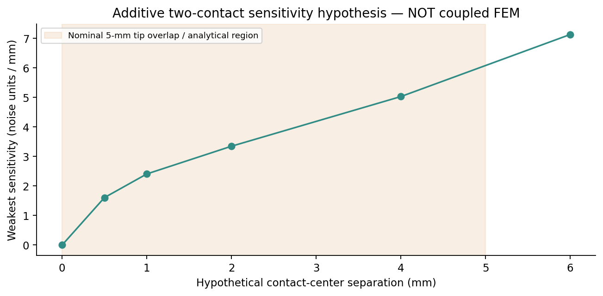

本轮不引入新的定位架构、不训练新的定位权重。全部对照沿用实测静态磁图、慢磁记忆、磁证据分支保护、冻结因果XY与最终Z证据层。源/目标旧记录统一在10 Hz因果缓存流上重放，不等同原保存在线值；不读取指令、轨迹模板或未来帧进行推理。
真实定位主评估使用名义压深0.4–3.0 mm；虚拟接触路径约为0.45–2.25 mm。弱浅层和真实接触判定不是本轮虚拟标签能够独立解决的问题。
六种固定标准动作，另有60条复杂动作。F/M/G/N共享最终输出许可，仅对定位模块作诊断；U与Final使用相同完整运行器，仅关闭增量Z，逐帧断言XY和许可相同。所有主误差保持原始坐标，不做输出平移、时间对齐或坐标平滑。


| 动作 | 静态 XY | 慢记忆 XY | 分支保护 XY | 因果 XY | 最终 XY / Z | XY相对静态变化 |
|---|---|---|---|---|---|---|
| grid | 0.770 | 0.732 | 0.732 | 0.444 | 0.445 / 0.057 | -42.2% |
| pure_z | 0.376 | 0.404 | 0.404 | 0.203 | 0.203 / 0.034 | -46.0% |
| radial | 0.766 | 0.520 | 0.519 | 0.208 | 0.209 / 0.075 | -72.8% |
| circle4p25 | 1.420 | 0.694 | 0.694 | 0.178 | 0.179 / 0.076 | -87.4% |
| circle5p25 | 1.747 | 1.174 | 1.215 | 0.200 | 0.201 / 0.138 | -88.5% |
| compound | 1.506 | 0.704 | 0.580 | 0.454 | 0.452 / 0.138 | -70.0% |
独立经验正向模型产生的场，包含静态模型失配和动态记忆；它是任务闭环的主要输入。另外保留“精确磁图＋同一噪声”及“精确磁图＋经验历史残差＋同一噪声”两组一致性控制。后两者使用了逆映射的磁图，不能冒充独立物理验证。
在只有精确静态场的控制中，静态逆解本来就应占优；若因果残差头把它推偏，说明该头对学得的数据分布有依赖，不是任何场条件下都单调改进。对经验动态场的改善不能全部归因于记忆，也可能补偿底座偏差。
| 动作 | 静态 XY | 慢记忆 XY | 分支保护 XY | 因果 XY | 最终 XY / Z | XY相对静态变化 |
|---|---|---|---|---|---|---|
| grid | 0.196 | 0.205 | 0.205 | 0.342 | 0.351 / 0.043 | +78.8% |
| pure_z | 0.095 | 0.100 | 0.100 | 0.163 | 0.165 / 0.031 | +72.6% |
| radial | 0.067 | 0.070 | 0.070 | 0.201 | 0.202 / 0.031 | +202.5% |
| circle4p25 | 0.070 | 0.072 | 0.072 | 0.233 | 0.233 / 0.043 | +231.8% |
| circle5p25 | 0.070 | 0.075 | 0.075 | 0.298 | 0.299 / 0.063 | +325.7% |
| compound | 0.082 | 0.088 | 0.088 | 0.191 | 0.189 / 0.031 | +131.5% |
| 动作 | 静态 XY | 慢记忆 XY | 分支保护 XY | 因果 XY | 最终 XY / Z | XY相对静态变化 |
|---|---|---|---|---|---|---|
| grid | 0.666 | 0.523 | 0.523 | 0.650 | 0.635 / 0.044 | -4.7% |
| pure_z | 0.234 | 0.227 | 0.227 | 0.200 | 0.204 / 0.055 | -12.9% |
| radial | 0.405 | 0.277 | 0.277 | 0.246 | 0.247 / 0.065 | -39.0% |
| circle4p25 | 0.384 | 0.196 | 0.196 | 0.207 | 0.207 / 0.096 | -46.0% |
| circle5p25 | 0.464 | 0.249 | 0.249 | 0.301 | 0.301 / 0.089 | -35.1% |
| compound | 1.261 | 0.588 | 0.588 | 0.587 | 0.586 / 0.120 | -53.5% |
分别搜索虚拟、源侧训练、源侧留出和目标侧留出记录。位置分离条件：XY差≥1 mm，或Z差≥0.3 mm；同一Trial至少相隔3秒。所有端点均可读取到同一基线内的2秒因果历史。距离以源侧无载噪声逐通道缩放，不用DTW或事后时间配准。
主判据取各历史时刻15维磁场差的最大值，保留短窗口已有证据；阈值1.414、2、3作敏感性分析。对固定当前混淆对比较窗口，不用每个窗口重新选更有利的样本。另给出高斯白噪声下随窗口长度变化的95%最大差值；这不是对有色噪声的校准显著性检验。

| 数据 | 端点数 | 当前仍近似的对数 | 0.1 s | 0.4 s | 1 s | 2 s |
|---|---|---|---|---|---|---|
| synthetic | 2200 | 8 | 5 | 2 | 2 | 2 |
| source_training | 2200 | 2 | 0 | 0 | 0 | 0 |
| source_validation | 1172 | 4 | 0 | 0 | 0 | 0 |
| source_heldout | 1601 | 0 | 0 | 0 | 0 | 0 |
| target_heldout | 2200 | 39 | 4 | 1 | 1 | 0 |
这些是平台指令位置候选，不能直接称为真实接触状态不可辨识。跨Trial候选可能含坐标原点、B0和时序差异；完整JSON另保留同Trial统计、同位置不同历史候选及逐对15维历史。
| 数据 | 当前 | 0.1 s | 0.4 s | 1 s | 2 s |
|---|---|---|---|---|---|
| synthetic | 0 | 0 | 0 | 0 | 0 |
| source_training | 2 | 0 | 0 | 0 | 0 |
| source_validation | 4 | 0 | 0 | 0 | 0 |
| source_heldout | 0 | 0 | 0 | 0 | 0 |
| target_heldout | 7 | 2 | 1 | 1 | 0 |
这些仍是候选集合的描述性计数，不是概率保证。源侧选参集参与过正向模型选择，单独标明；源侧留出未找到低于本阈值的对，也不能据此证明整个工作域唯一可解。
| 数据 | 阈值1.414 | 阈值2 | 阈值3 |
|---|---|---|---|
| synthetic | 0.09% | 0.45% | 4.27% |
| source_training | 0.09% | 0.18% | 3.64% |
| source_validation | 0.00% | 0.68% | 5.20% |
| source_heldout | 0.00% | 0.00% | 2.94% |
| target_heldout | 0.09% | 2.41% | 15.05% |
比例为有可搜索候选的端点中，最近不同位置候选低于阈值的比例；不是独立轨迹数量或接触召回率。
以下两对固定候选分别对应XY位置差与Z压深差。当前磁场近似，但过去的实测15维场提供额外区分。相对时间只以已选端点为零，不优化任何时移；位置是原始指令参考。第二图逐通道显示纯Z候选的真实磁场，不是生成器的曲线。


都出现在起始压入约0.40–0.43 mm的端点；每个两秒窗口的21个样本中，20个低于正向模型0.4 mm的训练压深下限。延长主要由无载／弱浅层组成的历史，并不自动增加有效位置证据。这是“冷启动浅层需独立验证”的候选，不能把生成器低覆盖区的歧义宣布为真实器件的物理极限。
| 固定片段 | 指令参考XYZ mm | 同流冻结完整输出XYZ mm |
|---|---|---|
| F_000133 A，233.1s | 2.000 / 0.000 / 0.505 | 2.516 / 0.445 / 0.461 |
| F_000133 B，259.9s | 2.000 / 1.000 / 0.409 | 2.213 / 1.032 / 0.400 |
| r354_target_000014 A，17.2s | 0.000 / 0.000 / 0.832 | 0.029 / -0.502 / 0.480 |
| r354_target_000014 B，22.8s | 0.000 / 0.000 / 0.515 | 0.679 / -0.115 / 0.453 |
纯Z例中，两参考深度相差约0.317 mm，而完整算法两输出深度仅相差约0.027 mm。历史能区分这对观测，却未被当前跨器件深度解充分利用。该例是在候选排序后检验输出，不按重建分数挑选；不能把序列搜索中的“分开”写成定位已成功。

固定选择同Trial、同当前位置候选中场差最大的例子。这个片段明确显示当前位置参考不足以解释磁场变化，但单例不能排除指令时间误差、松弛与漂移等共同作用；它是历史建模的动机证据，不是独立形变真值。
30条真实记录，五种留一节点设置。仅用四节点当前/过去磁场补出三通道，随后送入同一完整正式算法。补全模型只用源侧训练和选参，目标侧保持零样本。本表误差使用两种输入共同输出的固定配对帧；覆盖率则分别统计，拒绝输出不会计为零定位误差。

| 器件 | 补全节点 | 配对XYZ误差 mm | 独立覆盖率 | 平移诊断后XYZ mm |
|---|---|---|---|---|
| source | S1 | 0.297 → 0.369 | 97.7% → 98.6% | 0.265 → 0.315 |
| source | S2 | 0.297 → 0.320 | 97.7% → 98.9% | 0.265 → 0.280 |
| source | S3 | 0.297 → 0.289 | 97.7% → 98.6% | 0.265 → 0.262 |
| source | S4 | 0.297 → 0.326 | 97.7% → 98.7% | 0.265 → 0.281 |
| source | S5 | 0.296 → 0.472 | 97.7% → 97.0% | 0.264 → 0.441 |
| target | S1 | 0.700 → 0.636 | 96.3% → 96.1% | 0.604 → 0.514 |
| target | S2 | 0.702 → 0.578 | 96.3% → 96.3% | 0.606 → 0.496 |
| target | S3 | 0.703 → 0.695 | 96.3% → 95.9% | 0.607 → 0.615 |
| target | S4 | 0.702 → 0.693 | 96.3% → 96.3% | 0.606 → 0.600 |
| target | S5 | 0.702 → 1.114 | 96.3% → 96.8% | 0.605 → 1.045 |
此回测不提供平台安全抬离提示，保留安全指令窗中磁场残余导致的实际输出数。数值补全误差、采样率迁移和许可改变不能混为一个定位改善结论；原始五节点值不进入补全特征。
留一节点的对照共享原始五节点记录的采集有效标记，补全特征不读取隐藏节点数值。这属于已有记录上的条件化输入留出，不等同于四传感器硬件已验证。
平移诊断在每条记录、同一配对输出帧上估计一个固定XYZ偏移，只用于判断变化是否来自整体偏移，不能冒充独立标定。下载逐记录偏移、覆盖和安全窗输出诊断。
只用源侧正向模型的机制分歧，对60条候选排序，按家族最多保留两条。筛选工作区支持比例、速度及压深；不利用目标侧或留出重建分数排序。下表是研究候选，不是可直接执行的打印机计划，仍需接触Z和完整安全包络。
| 候选 | 动作 | 模型分歧P95，噪声单位 | 训练范围内比例 |
|---|---|---|---|
| SYN_R363_005 | press_slide_release | 12.53 | 100.0% |
| SYN_R363_042 | lissajous_xyz | 12.47 | 100.0% |
| SYN_R363_047 | press_slide_release | 12.30 | 100.0% |
| SYN_R363_036 | lissajous_xyz | 12.26 | 100.0% |
| SYN_R363_027 | piecewise_xyz | 12.05 | 100.0% |
| SYN_R363_019 | variable_depth_loop | 11.24 | 100.0% |
| SYN_R363_009 | piecewise_xyz | 10.83 | 100.0% |
| SYN_R363_056 | spiral_xyz | 9.71 | 100.0% |
| SYN_R363_055 | variable_depth_loop | 9.06 | 100.0% |
| SYN_R363_008 | spiral_xyz | 8.48 | 100.0% |
| SYN_R363_046 | stop_reverse | 7.43 | 100.0% |
| SYN_R363_034 | stop_reverse | 7.24 | 100.0% |

使用单点场相加仅构造局部灵敏度假设，求15×6的两触点位置雅可比。重合且等深时两组列相同，必然退化；分离可提高最弱灵敏度，但这不证明真实耦合力学下可恢复两触点。小于5 mm的中心间距标记为触头实体重叠风险，只用于数学诊断。没有创建多点训练真值，也没有声称实现多点重建。
冻结正式算法的闭环只是基础检查，不等于“只用虚拟数据重新得到相同研究思路”。现已单独完成虚拟静态标定、虚拟标准运动拟合慢记忆、同架构因果XY头训练及静态锚点/历史输入对照，详见仿真中的科学问题与消融复现。五次初始化及全部测试均保留，不按测试选种子。
本阶段的成功标准是关键现象和干预/消融关系能否复现，而非找到更好的模型或替换正式模型。稀疏节点补全与真实回测作为补充；虚拟增强、预训练微调的实际收益后置，不以它们决定仿真是否具有研究价值。
本轮不修改原始CSV、正式模型、设备硬件或论文。仿真复现机制与真实任务收益分开检验，不能把内部一致性控制或噪声阈值当成物理真实性证明。